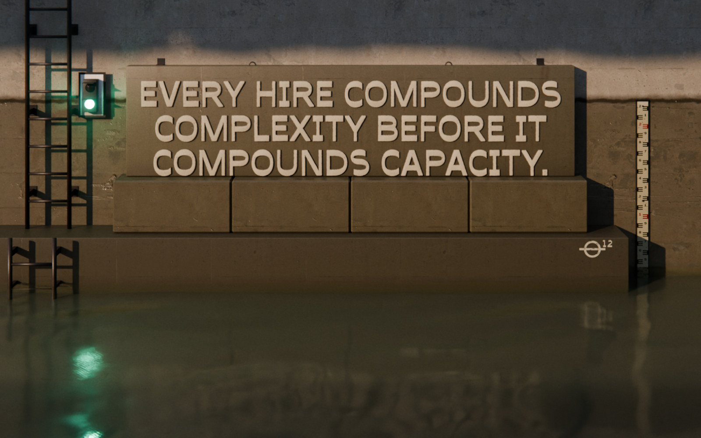

Scaling Up‑Side‑Down
The book
SUSD Bootloader
Get it free
complexity
margin
Real scaling is cyclical.
Up
Up for growth.
Side
Side for stability.
Down
Down for pruning.
Complexity pruned, margin recaptured, efficiency locked
The pages are reference. The file is the operating system.
SUSD Bootloader
The book's appendix as one file, for your AI
Free
Version 16, 35,445 words
Works with Claude, ChatGPT and Gemini
It starts with three questions
Where am I now?
Where does my vehicle top out?
Where do I actually want to be?